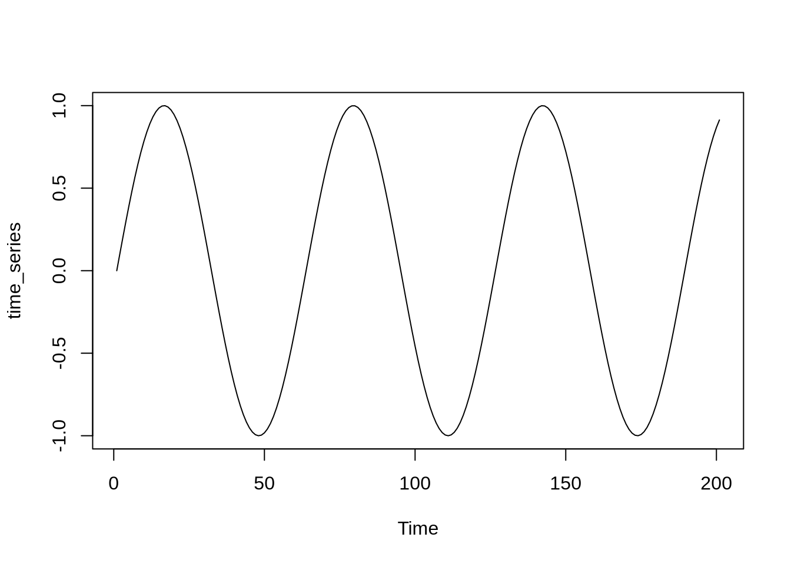
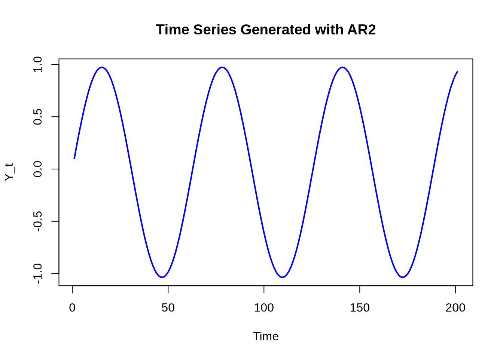
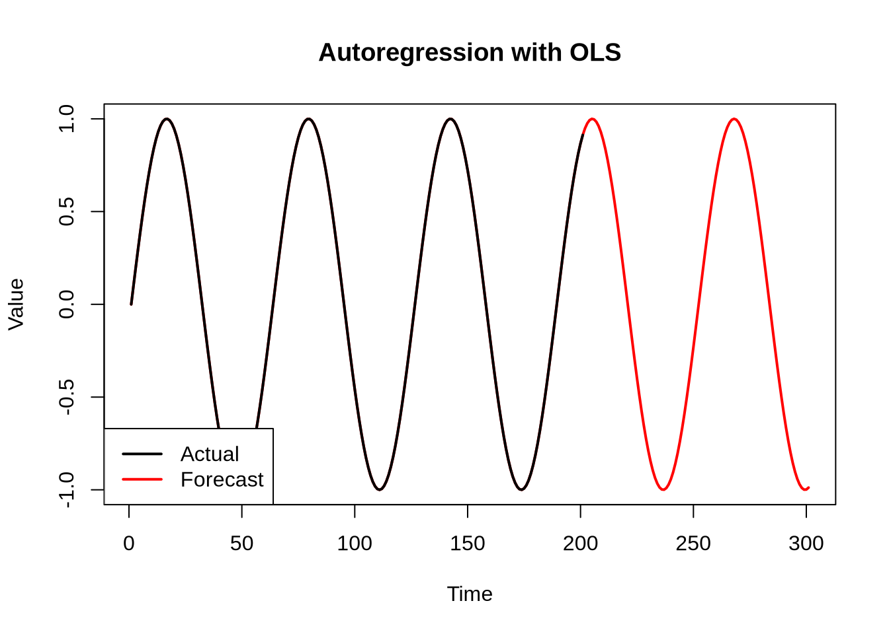
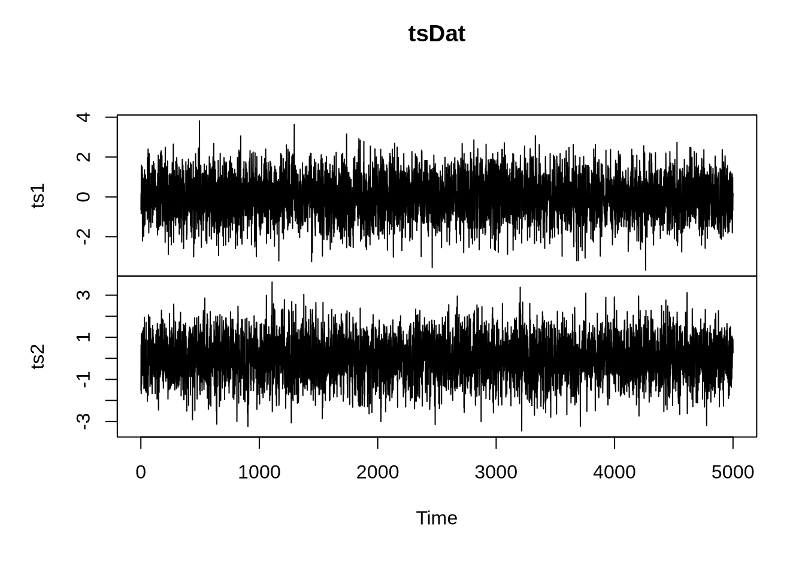
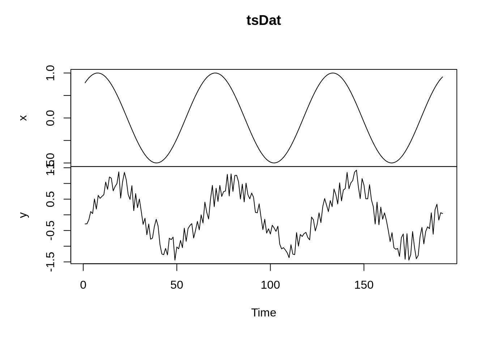
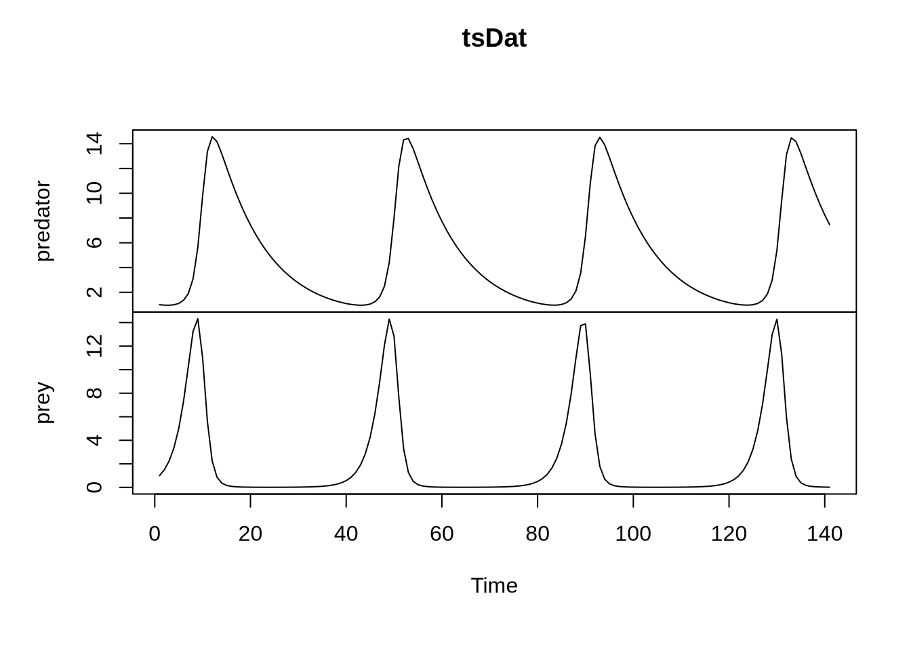
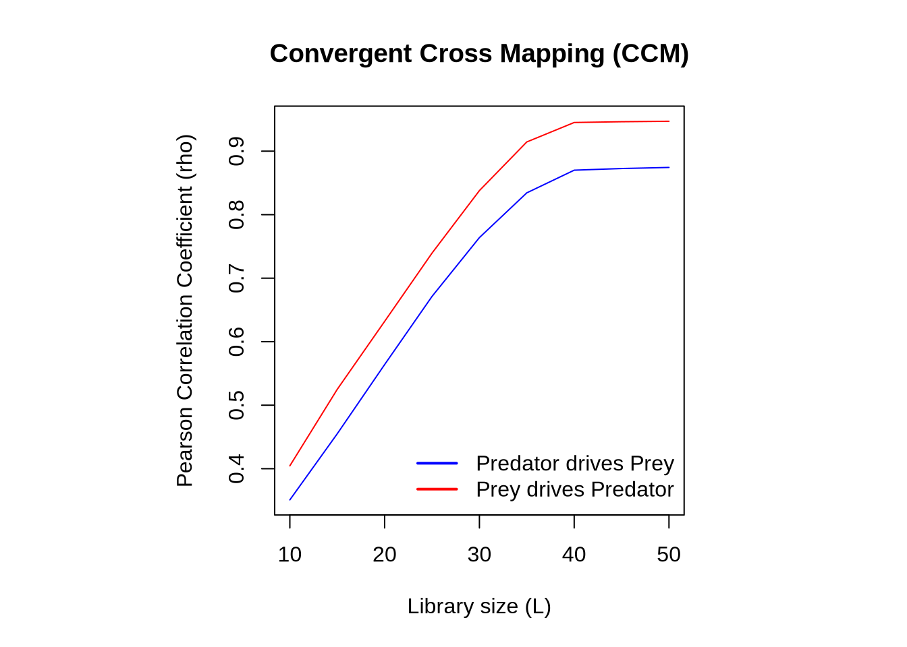

3 Week 3: Understanding Environmental Systems (II)
This tutorial covers the following topics:
- Autoregression
- Vector autoregression (VAR)
- Granger Causality
- Convergent Cross Mapping (CCM)
Load the required R packages:
## Loading required package: MASS## Loading required package: strucchange## Loading required package: zoo##
## Attaching package: 'zoo'## The following objects are masked from 'package:base':
##
## as.Date, as.Date.numeric## Loading required package: sandwich## Loading required package: urca## Loading required package: lmtest3.1 Autoregression
A first-order autoregressive model (AR1) is defined as:
\[ y_t = \beta_0 + \beta_1y_{t-1} + \epsilon_t\] The response variable in the previous time period (\(y_t\)) is the predictor. If we want to predict \(y\) this year (\(y_t\)) using measurements from two (rather than one) previous time steps, then we use a second order autoregressive model (AR2):
\[ y_t = \beta_0 + \beta_1y_{t-1} + \beta_2y_{t-2}+ \epsilon_t\] More, generally, a \(p\)-order autoregressive model is defined as:
\[ y_t = \beta_0 + \beta_1y_{t-1} + \beta_2y_{t-2}+...+ \beta_py_{t-p} + \epsilon_t\]
Let’s use a AR2 to forecast an oscillating function.
# Create a sinusoidal time series
t <- seq(0, 20, 0.1) # time axis
n <- length(t) # number of time steps
x <- sin(t)
time_series <- ts(x)
plot(time_series)
Next, fit an second-order autoregressive model using Ordinary Least Squares regression (OLS)
##
## Call:
## ar.ols(x = time_series, order.max = 2)
##
## Coefficients:
## 1 2
## 1.99 -1.00
##
## Intercept: -0.0003167 (5.822e-16)
##
## Order selected 2 sigma^2 estimated as 6.72e-29The Intercept refers to \(\beta_0\) and the coefficients 1 and 2 refer to \(\beta_1\) and \(\beta_2\). Our AR2 is therefore:
\[ y_t = -0.0003167 + 1.99y_{t-1} - 1.00y_{t-2} \]
Let’s plot this function:
- Set parameters
beta0 <- -0.0003167 # intercept
beta1 <- 1.99 # Coefficient of y_{t-1}
beta2 <- - 1.00 # Coefficient of y_{t-2}- Set the initial values of the time series
- We will need two initial values because we are predicting \(y_t\) from \(y_{t-1}\) and \(y_{t-2}\)
- Generate the time series using AR2
for (t in 3:n) {
epsilon_t <- 0 # Random error term
y[t] <- beta0 + beta1 * y[t-1] + beta2 * y[t-2] + epsilon_t
}- Plot the generated time series
plot(y, type = "l", col = "blue", lwd = 2,
xlab = "Time", ylab = "Y_t", main = "Time Series Generated with AR2")
- You can reproduce a sinusoidal function using AR, amazing! Given that each \(y_t\) depends on previous time steps (in our case \(y_{t-1}\) and \(y_{t-2}\)), we should be able to use AR to predict the future. Let’s try that next using the
stats::predictfunction.
# Forecast the next 100 steps
forecast_length <- 100
pred <- stats::predict(ar_model, n.ahead = forecast_length)
# Combine actual and forecasted values
combined_series <- c(time_series, pred$pred)
# Plot the actual time series and the forecast
plot(
combined_series,
type = "l",
col = "red",
lwd = 2,
xlab = "Time",
ylab = "Value",
main = "Autoregression with OLS"
)
lines(1:n, time_series, col = "black", lwd = 2) # Actual time series in black
# Add a legend
legend(
"bottomleft",
legend = c("Actual", "Forecast"),
col = c("black", "red"),
lwd = 2
)
- The result matches what you intuitively expect. Let’s now see how we can work with multiple variables.
3.2 Vector autoregression (VAR)
Vector autoregression (VAR) extends the idea of autoregression to multivariate time series. Each variable is a linear function of past lags of itself and past lags of the other variables. Suppose we measure two different time series variables, denoted by \(x_{t}\) and \(y_{t}\). The first-order vector autoregressive model (VAR(1)) then is:
\[ x_{t} = \beta_{1} + \beta_{11} x_{t-1} + \beta_{12} y_{t-1} + \epsilon_{1,t} \] \[ y_{t} = \beta_{2} + \beta_{21} x_{t-1} + \beta_{22} y_{t-1} + \epsilon_{2,t} \]
You can see that the variable \(x_t\) depends on the 1-lag of itself (\(x_{t-1}\)) and of the other variable (\(y_{t-1}\)). As for AR, the order of VAR can be increased by including more time lags. Let’s apply VAR to two time series.
set.seed(1)
# Create time-series objects
ts1 <- ts(rnorm(n=5000))
ts2 <- ts(rnorm(n=5000))
# Bind time series and plot them
tsDat <- ts.union(ts1, ts2)
plot(tsDat)
- Calculate the coefficients for both time series using a time lag order of 1
- The output gives you the coefficients and the y-intercept. The
tsVARobject serves as an input when testing for Granger causality.
Quiz Question 1: What is the y-intercept of time series 1?
But before we move on to Granger, let’s brielfy recap what we have learned so far:
- Create a autoregression model (AR):
stats::ar.ols(time_series, order.max = 2) - Predict the future using AR:
stats::predict(ar_model, n.ahead = forecast_length) - Create a vector autoregression model (VAR):
vars::VAR(tsDat, p = 3)
Quiz Question 2: What is the difference between an autoregression model (AR) and a vector autoregression model (VAR)?
Now we have the necessary skills for conducting causal inference, as explained next.
3.3 Granger Causality
Using our time series above, we can now ask whether \(x\) cause \(y\). To address this question, we define two models.
- Restricted model: univariate autoregression of \(y\):
\[ y_{t} = \alpha_{0} + \alpha_{1} y_{t-1} + \epsilon_{1,t} \]
- Unrestricted model: multivariate autoregression of \(y\):
\[ y_{t} = \beta_{0} + \beta_{1} x_{t-1} + \beta_{2} y_{t-1} + \epsilon_{2,t} \]
The restricted model is an autoregressive model where \(y_t\) depends only on \(y\) lags. The unrestricted model is an autoregressive model where \(y_t\) depends on \(y\) and \(x\) lags. If the unrestricted model outperforms the restricted model, then \(x\) precedes \(y\). The performance is measured via an \(F\)-test that compares the error terms of both models.
Quiz Question 3: What is the difference between a restricted and an unrestricted model?
- Conduct Granger causality:
vars::causality(tsVAR, cause = "ts1")$Granger##
## Granger causality H0: ts1 do not Granger-cause ts2
##
## data: VAR object tsVAR
## F-Test = 0.040775, df1 = 1, df2 = 9992, p-value = 0.84- The null hypothesis
H0says that the first time series does not Granger-cause the second time series. - The \(p\)-value exceeds 0.05, confirming the null hypothesis.
- You can safely assume that time series 1 does not Granger-cause time series 2
- Does that surprise you or did you expect this to happen? Explain why.
- Check for the reverse and see if time series 2 Granger-causes time series 1
Let’s apply Granger causality to a different set of time series that do have a statistical association.
- Create two sinusoidal time series that differ by random noise and that are lagged
t <- seq(0, 20, 0.1) # time axis
n <- length(t) # number of time steps
x <- sin(t)
y <- x[1:(n-9)]
x <- x[10:n]
# Add noise to y
noise <- runif(n=length(y), min = -0.5, max = 0.5)
y <- y + noise
x <- ts(x)
y <- ts(y)
tsDat <- ts.union(x, y)
plot(tsDat)
- Create a vector autoregression model and apply Granger causation
##
## Granger causality H0: x do not Granger-cause y
##
## data: VAR object tsVAR
## F-Test = 59.866, df1 = 2, df2 = 370, p-value < 2.2e-16
vars::causality(tsVAR, cause = "y")$Granger##
## Granger causality H0: y do not Granger-cause x
##
## data: VAR object tsVAR
## F-Test = 7.4927, df1 = 2, df2 = 370, p-value = 0.0006458- What is your interpretation of the results?
Now let’s apply our new skills to the Lotka-Volterra model.
- Create two time series, one for predator, the other for prey
rm(list = ls())
# (1) Create Predator-Prey time series
ode_function <- function(t, state, parameters)
{
with(as.list(c(state)), {
alpha <- 0.2
ri <- 1
m <- 0.2
gamma <- 0.5
K <- 10000
dY <- ri * Y * (1 - Y / K) - alpha * R * Y
dR <- alpha * gamma * R * Y - m * R
list(c(dY, dR))
})
}
state <- c(Y = 1, R = 1)
times <- seq(0, 70, 0.5)
out <- as.data.frame(ode(state, times, ode_function))
predator <- ts(out$R)
prey <- ts(out$Y)
tsDat <- ts.union(predator, prey)
plot(tsDat)
- Conduct Granger causality
##
## Granger causality H0: predator do not Granger-cause prey
##
## data: VAR object tsVAR
## F-Test = 454.2, df1 = 3, df2 = 262, p-value < 2.2e-16
vars::causality(tsVAR, cause = "prey")$Granger##
## Granger causality H0: prey do not Granger-cause predator
##
## data: VAR object tsVAR
## F-Test = 1132.3, df1 = 3, df2 = 262, p-value < 2.2e-16Interpret the results
Let’s repeat the same exercise but using Convergent Cross Mapping (CCM). Recall that in CCM, if variable \(x\) can be predicted using the reconstructed system based on the time-delay embedding of variable \(y\), then we know that \(x\) had a causal effect on \(y\).
data <- data.frame(predator, prey)
result <- ccm(data, "predator","prey",libsizes = seq(10,50,5), E = 10, k = 7,threads = 1)## Computing: [========================================] 100% (done)
## Computing: [========================================] 100% (done)
libs <- result$xmap$libsizes
x_drives_y <- result$xmap$x_xmap_y_mean
y_drives_x <- result$xmap$y_xmap_x_mean
# Plot
par(pty = "s")
plot(libs, x_drives_y, col = "blue", type = "l",
ylim = range(c(x_drives_y, y_drives_x)),
xlab = "Library size (L)", ylab = "Pearson Correlation Coefficient (rho)",
main = "Convergent Cross Mapping (CCM)")
# Add the other direction
lines(libs, y_drives_x, col = "red")
# Add legend
legend("bottomright", legend = c("Predator drives Prey", "Prey drives Predator"),
col = c("blue", "red"), lwd = 2, bty = "n")
- Who is the stronger driver?
3.4 Evaluate the statistical association between \(x\), \(y\), and \(z\) in the Lorenz equations using Granger causality
To recall, the Lorenz equations were the first chaotic system to be discovered. They are three differential equations that were derived to represent idealized behavior of the earth’s atmosphere:
\(\frac{dx}{dt} = -\frac{8}{3}x+yz\)
\(\frac{dy}{dt} = -10 (y - z)\)
\(\frac{dz}{dt} = -xy + 28y-z\)
- Good luck!
3.5 Evaluate the statistical association between \(x\), \(y\), and \(z\) in the Lorenz equations using Convergent Cross Mapping (CCM)
Granger causality is most appropriate for linear systems. For non-linear systems, we can use Convergent Cross Mapping (CCM). Assess the relationship between \(y\) and \(z\) using CCM. Interpret your results.
# Assess the relationship between y and z
# Subset to omit the initial transient part
# This will also reduce computational time
x <- x[1001:1500]
y <- y[1001:1500]
z <- z[1001:1500]
data <- data.frame(y, z)
result <- ccm(data, "y", "z", libsizes = seq(10,150,10), E = 3, k = 7,threads = 1)
libs <- result$xmap$libsizes
y_drives_z <- result$xmap$x_xmap_y_mean
z_drives_y <- result$xmap$y_xmap_x_mean
# Plot
par(pty = "s")
plot(libs, y_drives_z, col = "blue", type = "l",
ylim = range(c(y_drives_z, z_drives_y)),
xlab = "Library size (L)", ylab = "Pearson Correlation Coefficient (rho)",
main = "Convergent Cross Mapping (CCM)")
# Add the other direction
lines(libs, z_drives_y, col = "red")
# Add legend
legend("bottomright", legend = c("y drives z", "z drives y"),
col = c("blue", "red"), lwd = 2, bty = "n")Let us now assess x and y and contrast the result with Granger causality
# Assess the relationship between y and z
# Subset to omit the initial transient part
# This will also reduce computational time
data <- data.frame(x, y)
cause_x <- ccm(data, cause = "x", effect = "y", libsizes = seq(10,150,10), E = 3, k = 7, threads = 1, bidirectional = FALSE)
cause_y <- ccm(data, cause = "y", effect = "x", libsizes = seq(10,150,10), E = 3, k = 7, threads = 1, bidirectional = FALSE)
libs <- result$xmap$libsizes
x_drives_y <- cause_x$xmap$y_xmap_x_mean
y_drives_x <- cause_y$xmap$y_xmap_x_mean
# Plot
par(pty = "s")
plot(libs, x_drives_y, col = "blue", type = "l",
ylim = range(c(x_drives_y, y_drives_x)),
xlab = "Library size (L)", ylab = "Pearson Correlation Coefficient (rho)",
main = "Convergent Cross Mapping (CCM)")
# Add the other direction
lines(libs, y_drives_x, col = "red")
# Add legend
legend("bottomright", legend = c("x drives y", "y drives x"),
col = c("blue", "red"), lwd = 2, bty = "n")